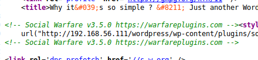
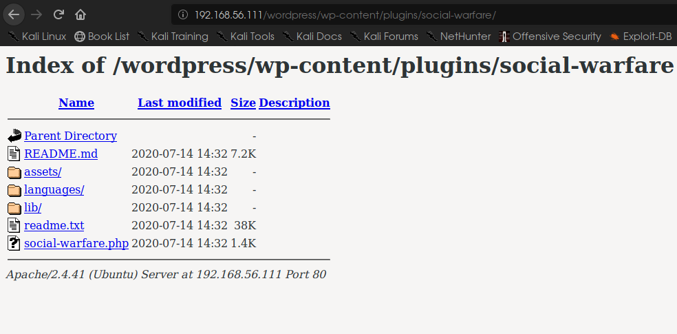
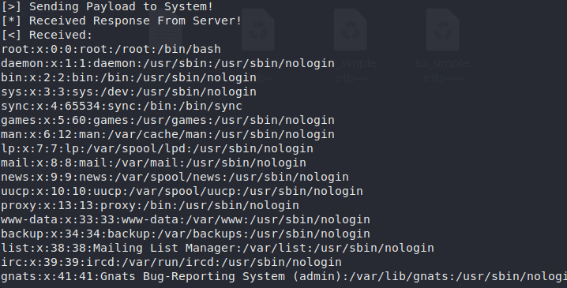

enumeration
From dirbuster I discovered it was running a wordpress site. For this I initiated wpscan against the server but no plugins were found. After inspecting the source code I learned that a plugin named “social warfare v3.5.0” was installed. After some information gatherng I was able to confirm that this plugin is vulnerable to RFI to RCE attack. (Exploit-DB: https://www.exploit-db.com/exploits/46794).


Using the PoC script I could execute commands on the server.

I found two users named ‘max’ & ‘steven’.